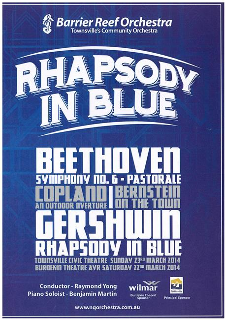

Guest conductor:
Raymond Yong
| Conductor: | Raymond Yong |
|---|---|
| Soloist: | Benjamin Martin piano |
| Program: | |
| Ludwig van Beethoven: | Symphony No. 6 in F major Op 68 “Pastoral” |
| Aaron Copland: | An Outdoor Overture |
| Leonard Bernstein: | Three Dance Episodes from “On the Town” |
| George Gershwin: | Rhapsody in Blue |
| Rehearsal Conductor: | Andrew Ryder |
|---|---|
| Concert Master: | Stephen Frewen-Lord |
| Violin I: | Stephen Frewen-Lord, Kimberly Riskas, Stacey Lun, Satashi Siratuschi, Vicky Hultgren, Margot Doherty, Jasmine Martin, Tracey Cook, Ashley Harrington |
| Violin II: | Alexandra Gorton, Rishabh Verma, Sophie Gregory, Suva Leitch, Jasmine Lee, Victoria Kanowski, Stephanie Rigano |
| Viola: | Danielle Bijl, Cortney Husodo, Emily Mathews |
| Cello: | Rachel Lind, Arabella Campbell, Margaret Loftus, Carole Radanovic, Samuel Yick, Wade Tattersall, Rachel Hill, Rebecca Marki |
| Double Bass: | Stephen Kluver, Rohan de Bruyers, Chloe Williamson* |
| Flute: | Michelle Lee See, Brooke Schampers |
| Piccolo: | Sally Faint |
| Oboe: | Bernie Girard*, Georgina Kanowski |
| Clarinet: | Jacinta Payne, Rianta Belford, Craig Land |
| Bass Clarinet: | Craig Land, Sophie Vigor |
| Alto Saxaphone: | Rianta Belford, David Salisbury |
| Tenor Saxaphone: | Sally Faint |
| Bassoon: | Katy Frewen-Lord, Carl Bryant |
| Horn: | Andrew Ryder, Sarah Prideaux, Ben Fryer |
| Trumpet: | Arthur Florence, Angela Murray, Ben Fixter |
| Trombone: | Dylan Troyan, Haong-Tuong Nguyen-Hao, Amy Windsor |
| Piano: | Stephanie Rigano |
| Timpani: | Noel Price |
| Auxilliary Percussion: | Andrew Hodgson, Ruby Ansic |
| * augmenting players from Brisbane |
Guest conductor:
Raymond Yong